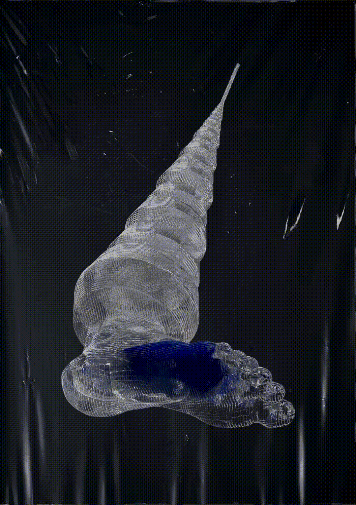

About The Body
Statment
DBAN development is based on the premise that research into digital art and cultural production is necessarily practice based because much of the outputs in this area examine and negotiate ways in which we use and abuse communication media and technology. The application of new methods and new critical ways of interacting with media is a central pillar of digital art history and contemporary manifestations. DBAN is currently working to develop an interactive component to this website that will serve as a forum and a space for members to communicate, share ideas, collaborate, and help each other with various aspects of the production of content, technologies, software, artworks, exhibitions etc.
D-BAN Wiki
Sign up to our wiki HERE